Venerable Ajaan Paññāvaḍḍho was for forty-one years the senior-most Western monk following Ajaan Mun’s path of practice. Ajaan Paññā, as he was called, was a man of intellectual brilliance who, through his own efforts in meditation, was able to establish a strong spiritual foundation in his heart. While showing a selfless devotion to the task of presenting Ajaan Mun’s Dhamma to his many disciples, his calm and purposeful presence touched the lives of so many people. He became a pioneer of the Western Sangha whose leadership influenced countless monks and laypeople to practice Ajaan Mun’s teachings; and whose translations and interpretations of Ajaan Mahā Boowa’s Dhamma talks introduced generations of Buddhists to the Thai Forest Tradition.
Ajaan Paññā was born Peter John Morgan of Welsh parents on the 19th of October 1925. His birth took place in Mysore state in South India at the Kolar Gold Fields, where his father was working as a mining engineer. At the age of seven he was sent to the United Kingdom by his parents to begin his formal education. He lived with his grandparents in Wales until the rest of his family returned from India several years later.
His family then settled in the English midlands where he completed his primary education. Because of the Second World War his family was forced to move several times before he finally completed his secondary education. In his mid-teens young Peter contracted bovine tuberculosis in his right foot, probably due to drinking contaminated milk. He underwent several unsuccessful treatments before having the infected bone surgically removed from his foot, causing his ankle bones to be fused together. This resulted in a lifelong disability which, though a misfortune in one way was a blessing in another—he was not required to serve in the military during the war, and thus avoided making a lot of bad kamma for himself. Peter was then free to further his education at Faraday House in London, where he graduated with a degree in electrical engineering just as the war ended.
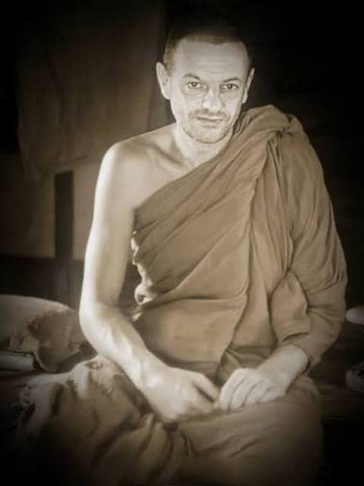
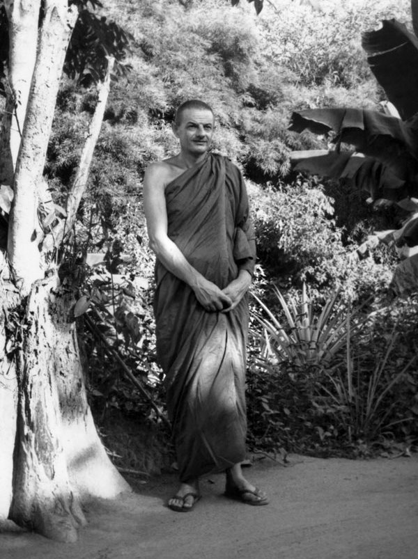
Following graduation, he spent two years in India working as an electrical engineer in the Kolar gold mines. Upon his return to England, he continued working as an engineer for a further seven years—first in Stafford, then in London. It was during this period of his life that Peter became deeply interested in Buddhism. He began to contemplate the value and purpose of birth and life in this world in light of its inevitable march toward sickness, old age and death. He began to question the very nature of existence and concluded that popular religious and scientific explanations were seriously flawed. In his quest for the truth, he discovered that the Buddha’s teaching provided a firm basis in theory and practice, which could serve as a platform for thoroughly investigating these issues. He read Buddhist doctrine extensively and joined several Buddhist organizations. Finally, inspired by the example of Bhikkhu Kapilavaḍḍho, who had ordained in Thailand, Peter decided to renounce the worldly life in order to fully pursue his search for the truth unhindered by the burden of worldly concerns. He was ordained as a sāmanera at the London Buddhist Vihāra on the 31st of October 1955. He was given the name Paññāvaḍḍho.
In December of that year Paññāvaḍḍho and two other sāmaneras flew to Bangkok, Thailand, together with Bhikkhu Kapilavaḍḍho, with the intention of ordaining as bhikkhus. After staying at Wat Paknam with Luang Paw Soth for a month, on the 27th of January 1956 the three sāmaneras were duly ordained as bhikkhus.
In mid-July of that year they all returned to London where they settled into a small vihāra provided by the English Sangha Trust. Gradually the others all returned to lay life, leaving Bhikkhu Paññāvaḍḍho to look after the vihāra alone. He remained in charge of the vihāra for a full five years before another bhikkhu arrived to take his place. During that time he selflessly devoted himself to the task of presenting the Dhamma to the best of his ability, not only by teaching at the vihāra, but also by giving public lectures and by organizing countryside retreats. At the same time, he fulfilled his obligation to the monk’s life, practicing meditation as thoroughly and strictly as possible.
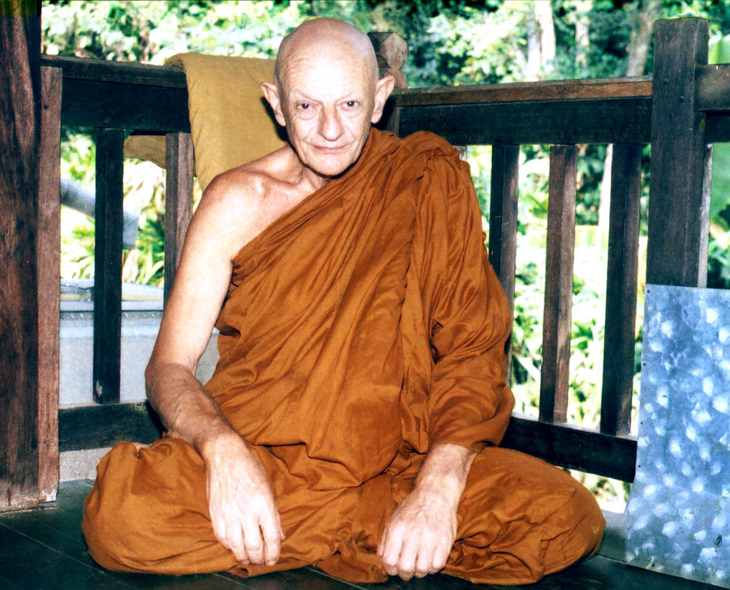
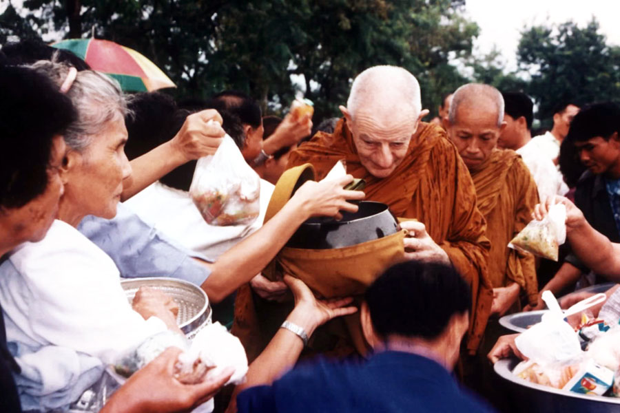
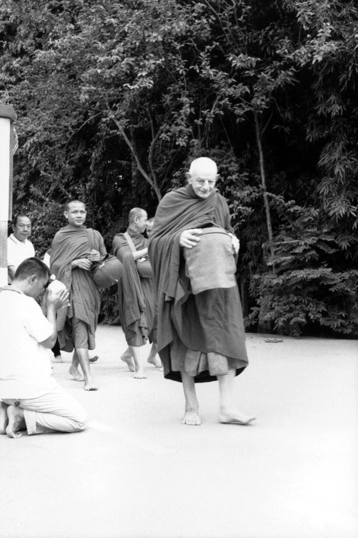
Still, at times he became discouraged, as the experience that he gained in this way was not sufficient to eliminate his doubts. He deeply felt the lack of a reliable mentor, a good teacher who could assure him that the noble goals of the Buddha’s teaching were still attainable in the modern era. Were there any living Arahants who could guide him along the path to Nibbāna? If he could find such a guide he would wholeheartedly dedicate himself to that goal.
To that end, Bhikkhu Paññāvaḍḍho decided that he must return to Thailand and look for a noble teacher, one who could command his full trust. He flew back to Thailand in November of 1961. At first he went to stay with Venerable Ajaan Paññānanda at Wat Cholapratan near Bangkok. While there he asked a Thai friend to scout out the best, most revered meditation masters in the country and report back to him. Eventually this friend took him to meet Venerable Ajaan Mahā Boowa, a longtime disciple of Venerable Ajaan Mun, who was widely renowned to be an Arahant. Impressed by Ajaan Mahā Boowa’s resolute character and profound wisdom, Bhikkhu Paññāvaḍḍho moved to his monastery, Baan Taad Forest Monastery in Udon Thani province, and became his devoted disciple. He arrived on the 16th of February 1963 and remained resident there for the rest of his life.
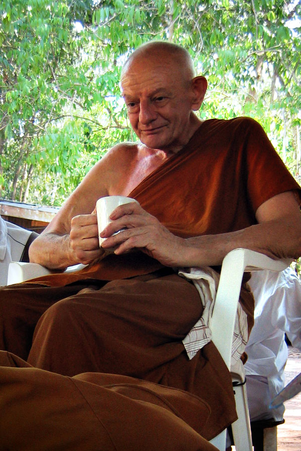
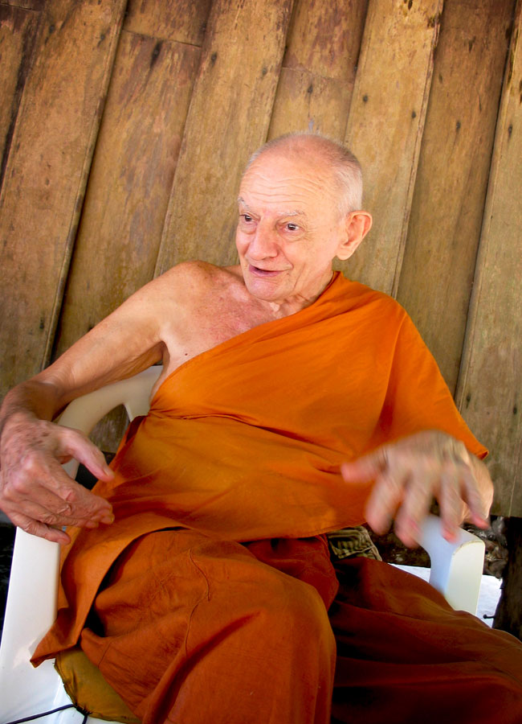
Ajaan Mahā Boowa soon shortened his name to Paññā, and from then on he was known simply as Ajaan Paññā. He remained a close disciple of Ajaan Mahā Boowa for the next 41 years. He said that he was able to put up with the hardships of living in the remote jungles of Northeast Thailand mainly due to the strong faith he had in Ajaan Mahā Boowa and his teaching methods. The climate was hot and uncomfortable, the food was simple and rough, there was a language barrier to overcome, and his fused ankle left him with limited mobility; but his heart was bolstered by his faith in the teacher and his perseverance in the practice. Ajaan Paññā’s mind tended naturally toward wisdom, and that allowed him to progress quickly in meditation. With the benefit of Ajaan Mahā Boowa’s careful guidance, his understanding of Dhamma deepened and became more comprehensive with each passing year.
In 1965, at Ajaan Mahā Boowa’s insistence, Ajaan Paññā re-ordained into the Dhammayut Nikāya. With the future Sangharāja—Somdet Phra Ñānasamvāra—as his preceptor, he took re-ordination at Wat Boworniwes on June 22 of that year.
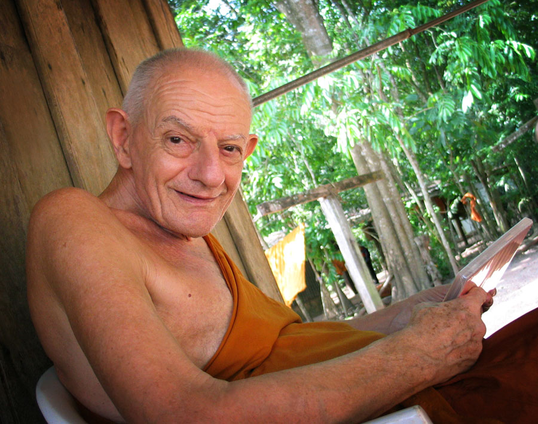
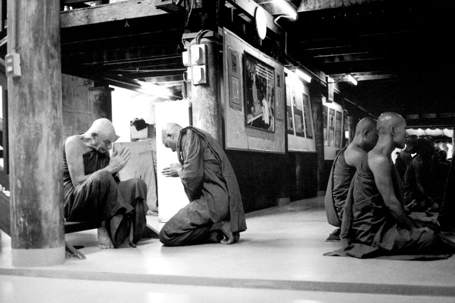
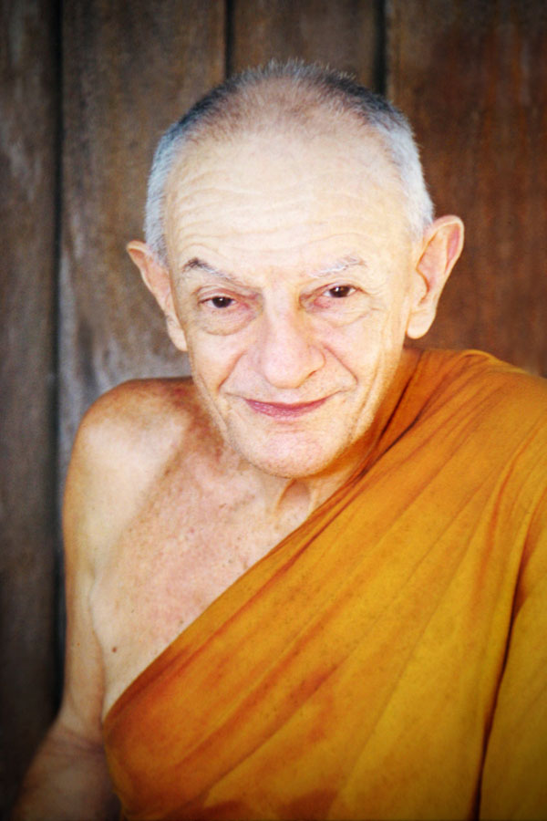
Ajaan Paññā possessed a very subtle and refined nature. His practice was beyond reproach. He was always composed and circumspect, and displayed wisdom in everything he did. Not only did he develop himself to the fullest, but his exemplary life and practice influenced many people from all over the world. From the beginning he worked tirelessly to translate Ajaan Mahā Boowa’s writings into English, publishing translations that were distributed free of charge around the world. Gradually he became a source of strength and inspiration to the Buddhists from many countries who traveled to Thailand to meet him. This is especially true of the Western bhikkhus who joined the Sangha at Baan Taad Forest Monastery after his arrival. He always showed a selfless devotion to the task of instructing those monks, and they always relied on him to teach them the correct way to practice Buddhism.
In 1974 the English Sangha Trust invited Ajaan Mahā Boowa to visit London, England with the intention of trying to establish a Theravada Sangha there. Ajaan Paññā accompanied his teacher to London where he helped to communicate the essence of Ajaan Mahā Boowa’s Dhamma teaching to the Buddhist faithful. It was to be the last time that Ajaan Paññā returned to England. But, although no Sangha was established at that time, their inspiring presence laid the groundwork for the future English Sangha.
His knowledge of engineering became a valuable asset to the monastery. From the time he arrived, he was involved in almost every building project carried out at Baan Taad Forest Monastery—often designing the project and overseeing the construction himself. Ajaan Mahā Boowa had so much faith in his wisdom and engineering skills that he rarely questioned Ajaan Paññā’s judgment in those matters. Whether the engineering was electrical or mechanical, structural or electronic, he had mastered them all on his own initiative, and could apply them with a skill and grace that constantly amazed his fellow monks. The ease with which Baan Taad Forest Monastery developed from a simple forest monastery into a thriving monastic center is a testament to Ajaan Paññā’s ability to manage a forest monastery’s resources while protecting its traditions and its meditative environment.
In September of 2003 the first symptoms appeared of a disease that would eventually cause his death. He was diagnosed with colon cancer, and he decided to treat it with natural herbal remedies. He appeared unfazed by his condition, and he felt quite sure that the medicine was working. Over the following nine months the cancer appeared to gradually regress, but in June of 2004 it resurfaced and began to spread rapidly. He showed great equanimity as death approached, never displaying any concern for the failing condition of his body. Ajaan Paññā passed away in complete stillness at 8:30 AM on August 18, 2004. He was two months shy of his 79th birthday. He died as he lived—with his heart purely and simply at peace.
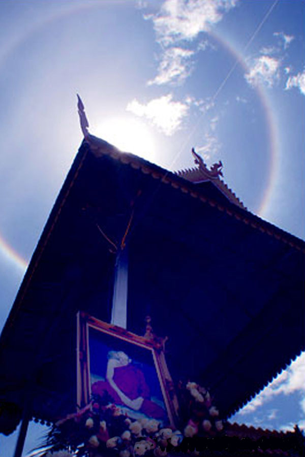
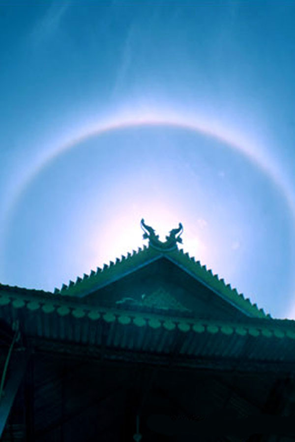
Ajaan Paññā’s remains were cremated at Baan Taad Forest Monastery ten days later. His funeral ceremony was at that time the largest event ever held there—an estimated 50,000 people attended to pay their final respects, including over 4,000 monks. Something extraordinary occurred on the day of his cremation. The sky was clear and cloudless. Yet, on three separate occasions, a circular rainbow appeared in the clear blue sky, each time encircling the sun like a large, luminous halo. The rainbow first appeared as his casket was being placed on the funeral pyre; it appeared again later when his life story was being read aloud; and yet a third time when Ajaan Mahā Boowa lit the funeral pyre. It was as though the power of Ajaan Paññā’s spiritual attainment had induced this image to reflect the depth and subtlety of his virtue for all to witness. That vivid testimony to Ajaan Paññā’s profound spiritual awakening marked a supremely graceful conclusion to the life and practice of a monk whose kindness and humility radiated softly from his being to encompass the whole sentient universe.
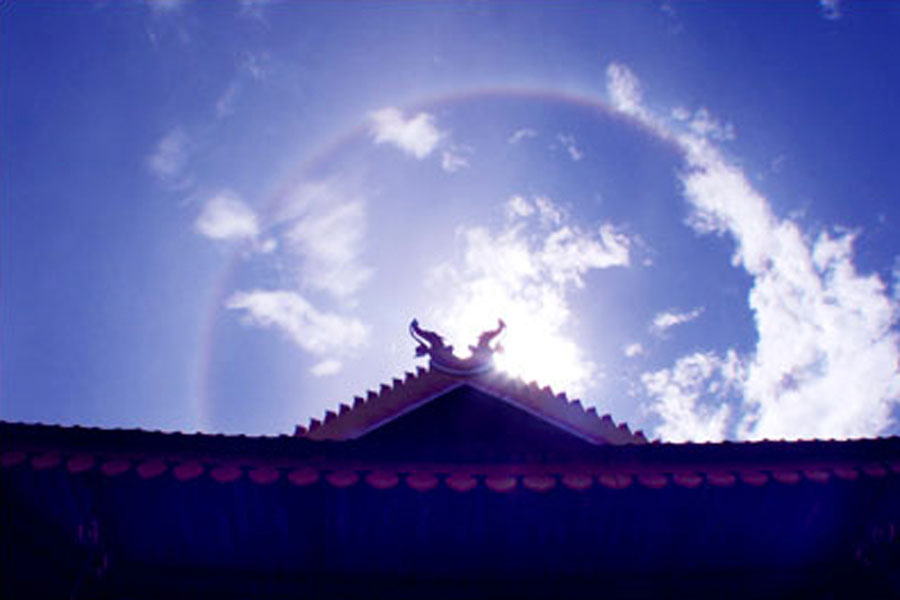
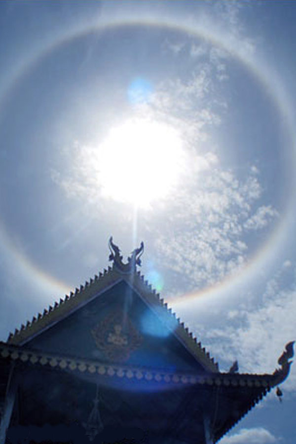
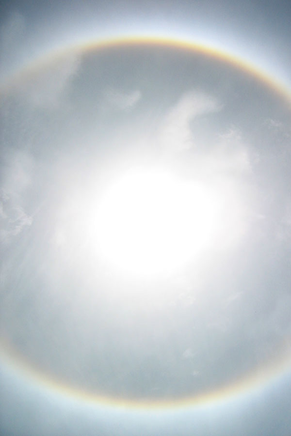